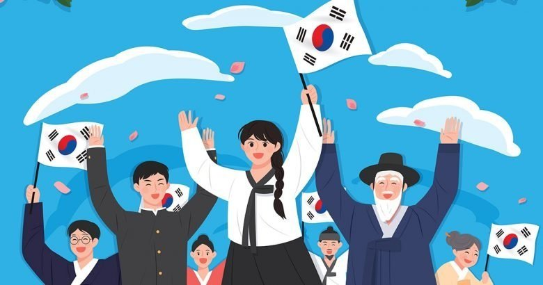
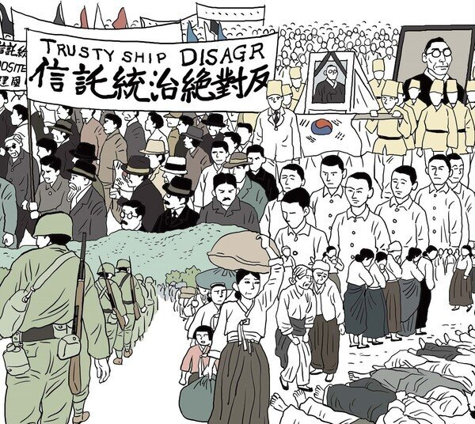
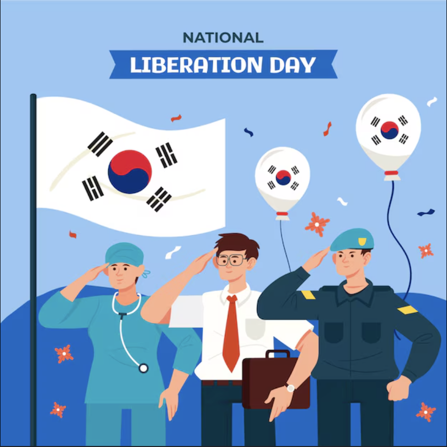

What is한국의 독립운동이란?
Korean independence movement?
Korean independence movement…한국의 독립운동은…
- Was a series of actions and campaigns aimed at achieving independence for Korea from Japanese colonial rule.일제의 식민 통치로부터 한국의 독립을 이루기 위하여 전개된 일련의 활동과 운동이었습니다.
- This movement spanned from Japan's annexation of Korea in 1910 until the end of World War II in 1945. (for 35 years)이 운동은 1910년 일제의 한국 강제 병합에서부터 1945년 제2차 세계대전이 끝날 때까지 35년간 이어졌습니다.
- The movement included a wide array of activities, such as armed resistance, cultural preservation, diplomatic efforts, and mass protests.이 운동에는 무장 투쟁과 문화 수호, 외교 활동, 대중 시위 등 다양한 활동이 포함되었습니다.

What Value does it have?어떤 의미가 있습니까?
- Historical Significance: The movement is a crucial part of Korea's history, marking the struggle against colonial oppression and the fight for sovereignty.역사적 의의: 이 운동은 식민 지배에 맞선 항쟁과 주권을 되찾기 위한 투쟁을 보여 주는, 한국 역사의 중요한 부분입니다.
- National Identity and Unity: The movement played a vital role in shaping Korean national identity and fostering a sense of unity and pride among Koreans.민족 정체성과 단결: 이 운동은 한국인의 민족 정체성을 형성하고 단결과 자긍심을 키우는 데 중요한 역할을 하였습니다.
- Foundation of Modern Korea: The independence movement laid the groundwork for the establishment of the Republic of Korea.현대 한국의 토대: 독립운동은 대한민국을 수립하는 기초를 놓았습니다.
- Inspiration and Legacy: The sacrifices and resilience demonstrated by those involved in the movement serve as an inspiration for future generations.귀감과 유산: 운동에 참여한 이들이 보여 준 희생과 굳은 의지는 후대에 귀감이 되고 있습니다.
- Promoting Peace and Reconciliation: Reflecting on the movement can also contribute to peace and reconciliation, particularly in the context of the divided Korean Peninsula.평화와 화해의 증진: 이 운동을 되돌아보는 일은 특히 분단된 한반도의 상황에서 평화와 화해에 기여할 수 있습니다.
In essence, the Korean independence movement is a symbol of courage, resilience, and the enduring quest for freedom and self-determination. It is a testament to the power of collective action and the human spirit's capacity to overcome oppression.결국 한국의 독립운동은 용기와 굳은 의지, 그리고 자유와 자결을 향한 끊임없는 추구의 상징입니다. 또한 집단의 행동이 지닌 힘과, 억압을 이겨 내는 인간 정신의 역량을 보여 주는 증거입니다.
